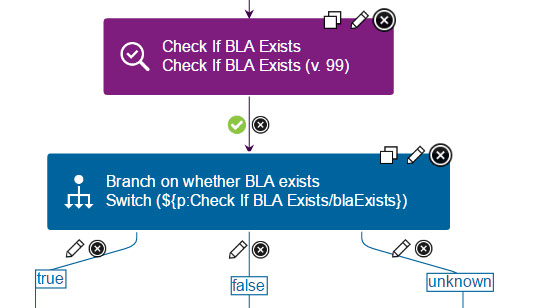

Output properties
Output properties are specialized properties that process steps generate. You use output properties to pass parameters to subsequent steps in a process.
You can use output properties in component processes and generic processes.
In the JavaScript™ code for your postprocessing
steps, you can establish output properties. See Examples of post-processing scripts. You set an output property for a
step by assigning it a name and a value in the postprocessing script. For example, the following
code from the Check If BLA Exists step in the IBM® WebSphere® Application Server Deployment plug-in establishes three possible values for the
blaExists
output property:
def exitCodeChecker = { exitCode ->
if (exitCode == 0) {
properties.setProperty("blaExists", "true");
exitValue = 0;
}
else if (exitCode == 30) {
properties.setProperty("blaExists", "false");
exitValue = 0;
}
else {
properties.setProperty("blaExists", "unknown");
exitValue = 1;
}
In the same way, you can create your own output properties by adding them in post-processing
scripts. Use the format
properties.setProperty("propName",propValue);,
where propName is the name of the property and
propValue is the value of the property. For
example:properties.setProperty("url", "http://example.com"); Then, you can refer to these output properties in other steps in a process. To do so, you
must know the name of the step that contains the output property that you use. For example,
your process might require different actions if a BLA exists. In this case, you could use a
Switch step to branch the process for each case. In the following figure, the Switch step
checks the value o f the
blaExists output property by using the code
${p:Check If BLA Exists/blaExists}:
You can use output properties in other postprocessing scripts, step preconditions, step properties, or the code of steps themselves. Passing property values among processes, resources, and steps helps limit the requirement to provide input manually and to maintain accuracy and reliability.